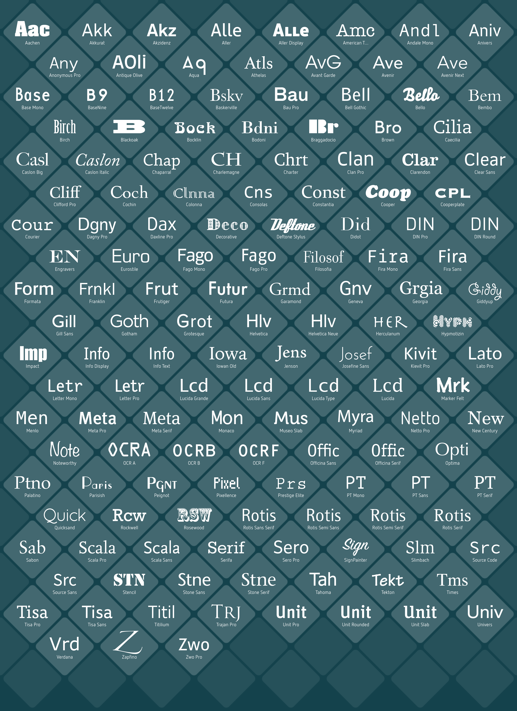

Bei Fontli handelt es sich um ein Schriftverwaltungsprogramm. Das Projekt entstand im Rahmen des Kurses Application Design des Studiengangs Ineraktionsgestaltung an der Hochschule für Gestaltung Schwäbisch Gmünd. Fontli ermöglicht ein schnelles Suchen, Finden und Vergleichen von Schriften.
Idee
Catrine Schlosser, 25, aus Offenburg, hat in ihrem Leben allein für ein Projekt über 420 Minuten aufgebracht, um unter knapp hundertdreiundzwanzig Dutzend Schriften eine passende zu finden. Durch dieses Erlebnis wird sie zwar für immer eine besondere
Beziehung zu Didonen haben, für die Zukunft wünscht sie sich dennoch einen intuitiveren Umgang mit einem Schriftverwaltungsprogramm um in Sachen Schrift inspiriert zu werden.
team
Kevin Rothweiler, 23, ein Stuttgarter aus Lörrach, ist durch sein Studium der Druck- und Medientechnologien versiert im Umgang mit Schriften. Dennoch konnte ihn dies nicht vor einem traumatisierenden Erlebnis mit einer Schriftverwaltung bewahren, die ihn mehrere Schriften
und einige Stunden gekostet hat.
Ege Can Tunca, 21 und gebürtiger Stuttgarter jedoch frei von schwäbischem Dialekt, hat seine Wände mit großen Akzidenz-Buchstaben geschmückt. Wenn Ege gerade einmal nicht spationiert, Frutiger-Zitate aufs Tapet bringt, oder Schriften auf der Milchtüte zu
benennen versucht, bewegt er sich anderweitig in typografischen Gefilden, bei einer Tasse Kaffee oder einem Glas Wein.
